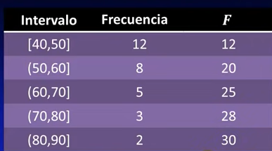

Como hacer o rellenar una tabla estadística
Marca de clase
Simbolo : xi o Mc o x
Se suman los valores del conjunto y se dividen en el total de valores.
Por ejemplo:
El 20 es el Li (limite inferior) - el 30 es el Ls (limite superior)
[20 - 30]
Se suman 20 + 30 y el resultado se divide en este caso con 2, porque es el nuemero total de valores.
Frecuencia absoluta
Simbolo : fi o f
Vienen en la tabla, y son las veces que se repiten los valores, la frecuencia con que se repiten.
Estos se suman para luego hacer otros calculos
20
25
40
30
Resultado = 115
Frecuencia acumulada
Simbolo : Fi o F
Son la suma de todas las frecuencias absolutas
Por ejemplo:

se van sumando las frecuencias absolutas:
12 + 8 = 20
12 + 8 + 5 = 25
12 + 8 + 5 + 3 = 28
asi sucesivamente..
Frecuencia absoluta X marca de clase
Simbolo : xi x fi o Mc x f
Se multiplica la frecuencia absoluta (fi) por la marca de clase (xi),y se suman todos los valores.
Por ejemplo:
Marca de clase (xi)
Frecuencia absoluta(fi)
xi x fi
20
30
600
25
32
640
20 x 30 = 600
ya luego 600 + 640 = 1240